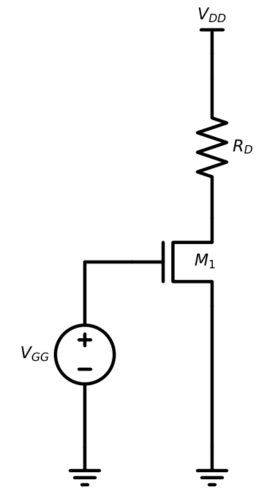
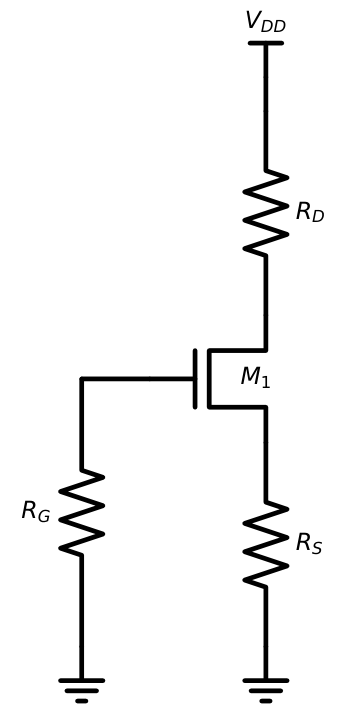
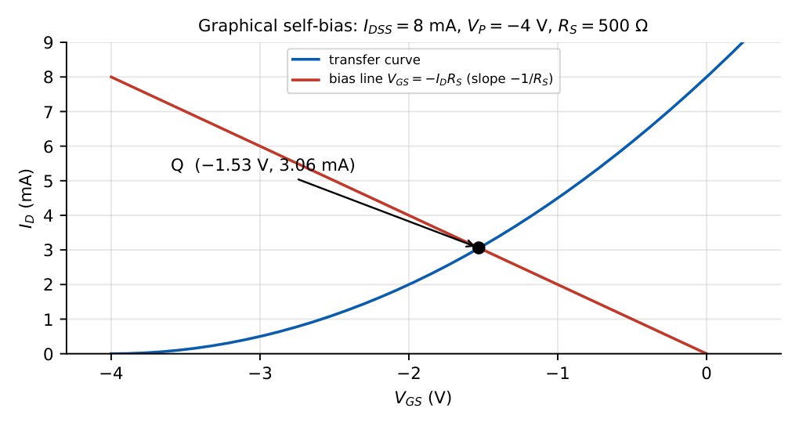
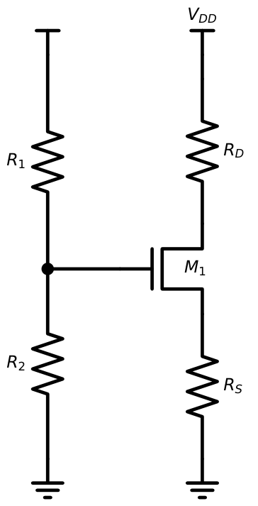
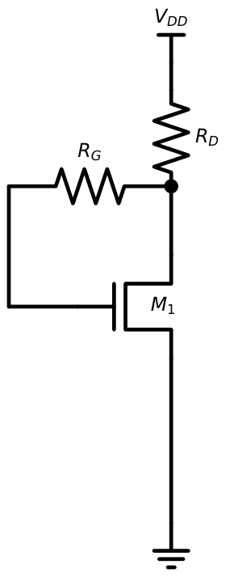
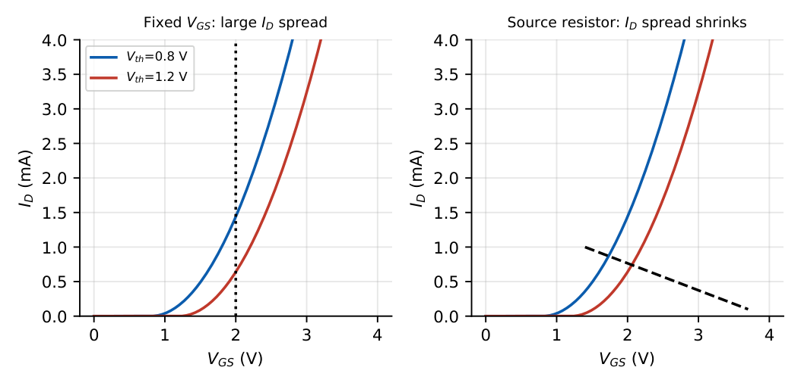

MOSFET Biasing
In this chapter
13.1 Fixed-gate bias
A fixed voltage \(V_{GG}\) sets \(V_{GS}\) directly.

\(V_{GS}=V_{GG}\) \(I_D=\tfrac12k_n(V_{GG}-V_{th})^2\) \(V_{DS}=V_{DD}-I_DR_D\)
Check saturation: \(V_{DS}\ge V_{GS}-V_{th}\).
\(V_{DD}=5\) V, \(R_D=10\) k\(\Omega\), \(V_{GG}=1.5\) V, \(V_{th}=1\) V, \(k_n=1\) mA/V\({}^2\). \(I_D=\tfrac12\times1\times0.25=0.125\) mA; \(V_{DS}=5-1.25=3.75\) V \(>0.5\) V: saturation.
Fixed bias is highly sensitive to \(V_{th}\): a \(\pm0.2\) V spread in \(V_{th}\) moves \(I_D\) from \(0.125\) mA to \(0.245\) mA (\(+96\%\)) or \(0.045\) mA (\(-64\%\)) in this example. It is rarely used in practice without additional stabilisation.
13.2 Self-bias

Since \(I_G=0\): \(V_G=0\), \(V_S=I_DR_S\), so \(V_{GS}=-I_DR_S\). This is used with depletion-mode devices (negative \(V_{GS}\) needed). Two equations: the transfer curve and the bias line \(V_{GS}=-I_DR_S\).
\(I_{DSS}=8\) mA, \(V_P=-4\) V, \(R_S=500\ \Omega\). Let \(x=I_D\) in mA: \(x=8(1-0.125x)^2\) so \(x^2-24x+64=0\), \(x=3.06\) mA (the other root \(20.9\) mA gives \(V_{GS}<V_P\), rejected). \(V_{GS}=-1.53\) V.

13.3 Voltage-divider bias

\(V_G=V_{DD}\dfrac{R_2}{R_1+R_2}\), \(V_{GS}=V_G-I_DR_S\)
Solve \(I_D=\tfrac12k_n(V_G-I_DR_S-V_{th})^2\) (a quadratic), keep the root with \(V_{GS}>V_{th}\).
\(V_{DS}=V_{DD}-I_D(R_D+R_S)\)
\(V_{DD}=10\) V, \(R_1=200\) k, \(R_2=100\) k, \(R_S=1\) k, \(R_D=2\) k, \(V_{th}=1\) V, \(k_n=2\) mA/V\({}^2\). \(V_G=3.33\) V. With \(I_D\) in mA: \(I_D=(2.333-I_D)^2\) so \(I_D^2-5.667I_D+5.444=0\); \(I_D=(5.667-3.215)/2=1.226\) mA (the other root \(4.44\) mA gives \(V_{GS}<V_{th}\)). \(V_{GS}=3.333-1.226=2.107\) V. \(V_{DS}=10-1.226\times3=6.32\) V \(>V_{ov}=1.107\) V: saturation. \(\checkmark\)
13.4 Drain-feedback bias

With \(I_G=0\) there is no drop across \(R_G\), so \(V_{GS}=V_{DS}=V_{DD}-I_DR_D\). The transistor is diode-connected and always in saturation. Negative feedback: if \(I_D\) rises, \(V_D\) falls, reducing \(V_{GS}\).
\(V_{DD}=10\) V, \(R_D=5\) k, \(V_{th}=1\) V, \(k_n=1\) mA/V\({}^2\). \(I_D=0.5(V_{GS}-1)^2\), \(V_{GS}=10-5I_D\). \(12.5I_D^2-46I_D+40.5=0\Rightarrow I_D=1.46\) mA (\(V_{GS}=2.71\) V; the other root \(2.22\) mA gives \(V_{GS}=-1.1\) V: rejected).
13.5 Q-point analysis
The Q-point of an MOSFET amplifier is \((I_D,V_{DS})\) in saturation. Choose \(V_{ov}\) (typically \(0.2\)–\(0.5\) V); \(I_D=\tfrac12k_nV_{ov}^2\) then fixes the width \(W/L\). Set \(V_{DS}\) at roughly mid-supply for maximum swing.
13.6 Bias stability
The dominant variation is in \(V_{th}\) (process and temperature) and \(k_n\) (mobility falls with temperature: \(\mu\propto T^{-3/2}\)).

With a source resistor: \(\dfrac{\Delta I_D}{\Delta V_{th}}\approx-\dfrac{g_m}{1+g_mR_S}\), so a large \(g_mR_S\) makes \(I_D\approx(V_G-V_{th})/R_S\) almost independent of the device. Unlike BJTs, MOSFETs have a zero-temperature-coefficient bias point: at a certain \(V_{GS}\) the mobility and \(V_{th}\) effects cancel, and there is no thermal runaway (at high current, \(I_D\) decreases with temperature).
13.7 DC load-line analysis
KVL for the output loop: \(V_{DS}=V_{DD}-I_D(R_D+R_S)\). The load line joins \((V_{DD},0)\) and \((0,\,V_{DD}/(R_D+R_S))\) on the \(I_D\)–\(V_{DS}\) plot; the Q-point is where it meets the curve for the biased \(V_{GS}\).
13.8 Common GATE traps
(1) Forgetting \(I_G=0\): no gate current means the gate resistor has no voltage drop, so \(V_G\) is set entirely by the divider (or is 0 for \(R_G\) to ground). (2) Wrong root of the quadratic for source-resistor bias. (3) Using the triode formula when the device is saturated, or vice versa. (4) Applying BJT ideas (\(I_C=\beta I_B\)) to MOSFETs. (5) Failing to check the region after solving.
Q1. Fixed bias with \(V_{GS}=2.5\) V, \(V_{th}=1\) V, \(k_n=2\) mA/V\({}^2\), \(V_{DD}=10\) V, \(R_D=2\) k\(\Omega\). \(I_D\) (mA) and region:
Q2. In self-bias (\(R_G\) to ground, \(R_S=1\) k\(\Omega\)) \(I_D=2\) mA. \(V_{GS}\) is V.
Q3. A drain-feedback biased NMOS has \(V_{DD}=5\) V, \(R_D=10\) k\(\Omega\) and \(I_D=0.2\) mA. \(V_{GS}\) is V.
Q4. For a voltage-divider bias with \(R_1=R_2\) and \(V_{DD}=6\) V, \(V_G=\) V.
Q5. Which biasing is least affected by device-to-device variation of \(V_{th}\)? (A) fixed-gate (B) source-resistor (C) both same (D) none.
Answers: Q1: \(I_D=\tfrac12\times2\times2.25=2.25\) mA; \(V_{DS}=10-4.5=5.5\) V \(>1.5\): saturation. Q2: \(-2\) V. Q3: \(5-0.2\times10=3\) V. Q4: 3 V. Q5: (B).
- Solve for \(I_D\): \(V_G=4\) V, \(R_S=2\) k, \(V_{th}=1\) V, \(k_n=1\) mA/V\({}^2\). [\(I_D=0.5(3-2I_D)^2\Rightarrow\) 0.85 mA]
- Find \(V_{DS}\) for \(V_{DD}=12\), \(I_D=1\) mA, \(R_D=6\) k, \(R_S=2\) k. [4 V]
- Design a divider with \(V_G=3\) V from \(V_{DD}=9\) V using \(R_2=100\) k. [\(R_1=200\) k]